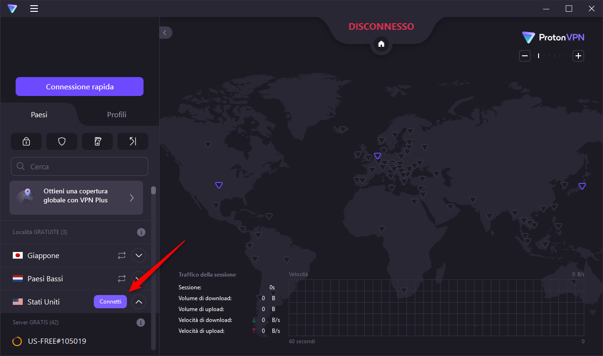
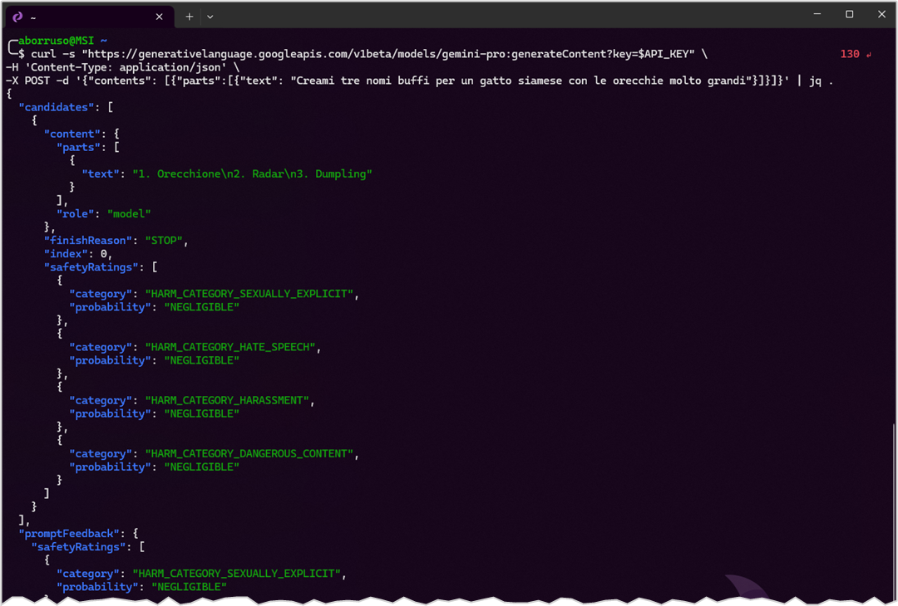

😉 Questo post è per Cesare Gerbino.
Introduzione
Google ha lanciato a inizio dicembre del 2023 Gemini, il suo modello di intelligenza artificiale migliore. Può comprendere e combinare diversi tipi di informazioni, come testo, codice, audio, immagini e video.
Da poco sono disponibili le API e ho voluto fare qualche test di base, usando la riga di comando.
Al momento le API sono accessibili soltanto dagli Stati Uniti, quindi bisogna usare un VPN. Io ho usato quella gratuita di Proton VPN (grazie a Francesco Passantino per il suggerimento di anni fa).
A seguire una mini guida per testarle
Connessione alla VPN
Per prima cosa bisogna connettersi alla VPN e scegliere come paese di connessione gli Stati Uniti.

Generare una chiave API
Una volta connessi dagli Stati Uniti è necessario generare una chiave API, per autenticarsi. Si può fare da questa pagina: https://makersuite.google.com/app/apikey.
Una volta generata - è una lunga stringa - è da archiviare da qualche parte.
Accesso alle API in REST, via cURL
È il modo più immediato e diretto. Si apre la shell e si manda una richiesta come questa, in cui si definisce prima una variabile con la chiave API e poi si lancia la chiamata.
# Una variabile dove inserire la chiave API
API_KEY="AIxxSyCnBOUyPuDLtjWY11HOwxxxxxxx"
# Lanciare la chiamata
curl -s "https://generativelanguage.googleapis.com/v1beta/models/gemini-pro:generateContent?key=$API_KEY" \
-H 'Content-Type: application/json' \
-X POST -d '{"contents": [{"parts":[{"text": "Creami tre nomi buffi per un gatto siamese con le orecchie molto grandi"}]}]}'{
"candidates": [
{
"content": {
"parts": [
{
"text": "1. Dumbo\n2. Flitzer\n3. Elicottero"
}
],
"role": "model"
},
"finishReason": "STOP",
"index": 0,
"safetyRatings": [
{
"category": "HARM_CATEGORY_SEXUALLY_EXPLICIT",
"probability": "NEGLIGIBLE"
},
{
"category": "HARM_CATEGORY_HATE_SPEECH",
"probability": "NEGLIGIBLE"
},
{
"category": "HARM_CATEGORY_HARASSMENT",
"probability": "NEGLIGIBLE"
},
{
"category": "HARM_CATEGORY_DANGEROUS_CONTENT",
"probability": "NEGLIGIBLE"
}
]
}
],
"promptFeedback": {
"safetyRatings": [
{
"category": "HARM_CATEGORY_SEXUALLY_EXPLICIT",
"probability": "NEGLIGIBLE"
},
{
"category": "HARM_CATEGORY_HATE_SPEECH",
"probability": "NEGLIGIBLE"
},
{
"category": "HARM_CATEGORY_HARASSMENT",
"probability": "NEGLIGIBLE"
},
{
"category": "HARM_CATEGORY_DANGEROUS_CONTENT",
"probability": "NEGLIGIBLE"
}
]
}
}Se si espande l’esempio di JSON qui sopra, la parte con la risposta alla chiamata è quella contenuta in .candidates[0].content.parts[0].text.
Si può modifcare il comando di sopra e usare jq per estrarla:
curl -s "https://generativelanguage.googleapis.com/v1beta/models/gemini-pro:generateContent?key=$API_KEY" \
-H 'Content-Type: application/json' \
-X POST -d '{"contents": [{"parts":[{"text": "Creami tre nomi buffi per un gatto siamese con le orecchie molto grandi"}]}]}' | \
jq '.candidates[0].content.parts[0].text' -rIn output si avrà qualcosa come:
1. Dumbo
2. Flitzer
3. ElicotteroNon vi resta che testare e divertirvi, con esempi migliori del mio. La cosa interessante è che è un’API REST, quindi si può usare da qualsiasi linguaggio di programmazione.

Utilizzare l’eccezionale LLM via cli
LLM è un’utility a riga di comando e una libreria Python per interagire con Large Language Models (LLM), ovvero modelli di linguaggio avanzati.
Permette di utilizzare sia API remote per accedere a modelli ospitati su server esterni, sia modelli installati e eseguiti localmente sul proprio computer.
Ed è possibile quindi usarlo per connettersi con il Large Language Models di Google Gemini.
🙏 L’autore della cli LLM è quel genio di Simon Willison.
Installazione
Per installarlo è sufficiente usare pip:
pip3 install llmPer usare Gemini, è necessario instalare il plug-in dedicato, llm-gemini:
llm install llm-geminiO anche
pip3 install llm-geminiUtilizzo
La prima cosa da fare è impostare la propria chiave API (quella richiesta sopra). Si apre la shell:
llm keys set geminiSi incolla la chiave API e si preme Invio.
Una volta fatto, si può testare il funzionamento con un esempio:
llm -m gemini-pro "Creami tre nomi buffi per un gatto siamese con le orecchie molto grandi"In output si avrà qualcosa come:
- Dumbo
- Elio
- PipistrelloLa cosa bella è che llm, come tutte le buone cli, può ricevere input dallo stdin e quindi può utilizzare l’output di altri comandi.
Ad esempio l’output di echo:
echo 'Dieci nomi per un blog che parla della riga di comando' | llm -m gemini-proE avrò in output qualcosa come:
1. Il Comando Centrale
2. Padronanza del Terminale
3. Il Mago della Riga di Comando
4. Il Domatore di Terminale
5. Il Maestro del Prompt
6. La Guida alla Riga di Comando
7. Il Tutorial del Terminale
8. Il Manuale del Terminale
9. Le Avventure di un SysAdmin
10. La Linea di Comando per TuttiUn esempio più carino, che mostra le info sul sistema operativo che sto usando adesso per testare Gemini. Il comando da cui parto è uname -a, che mi restituisce:
Linux MSI 5.15.133.1-microsoft-standard-WSL2 #1 SMP Thu Oct 5 21:02:42 UTC 2023 x86_64 GNU/LinuxVoglio creare un’informazione più leggile, e la voglio in formato markdown, per scriverla qui (il markdown è il formato in cui è scritto questo sito), e lo chiedo a Gemini, via llm:
llm -m gemini-pro "Questo è il mio sistema operativo: $(uname -a). Dimmi qualcosa di più, e dimmelo in markdown."In output avrò qualcosa come:
* **Kernel**: Linux 5.15.133.1-microsoft-standard-WSL2
* Questo è il kernel Linux utilizzato per eseguire WSL2. È una versione modificata del kernel Linux 5.15 che è stato ottimizzato per l'esecuzione in un ambiente Windows.
* **Nome Host**: MSI
* Questo è il nome del computer WSL2.
* **Versione**: #1 SMP Thu Oct 5 21:02:42 UTC 2023
* Questa è la versione della build del kernel Linux utilizzata per eseguire WSL2.
* **Architettura**: x86_64
* Questa è l'architettura del processore del computer WSL2.
* **Sistema Operativo**: GNU/Linux
* Questo è il sistema operativo utilizzato per eseguire WSL2. GNU/Linux è una distribuzione Linux basata sul kernel Linux.- Kernel: Linux 5.15.133.1-microsoft-standard-WSL2
- Questo è il kernel Linux utilizzato per eseguire WSL2. È una versione modificata del kernel Linux 5.15 che è stato ottimizzato per l’esecuzione in un ambiente Windows.
- Nome Host: MSI
- Questo è il nome del computer WSL2.
- Versione: #1 SMP Thu Oct 5 21:02:42 UTC 2023
- Questa è la versione della build del kernel Linux utilizzata per eseguire WSL2.
- Architettura: x86_64
- Questa è l’architettura del processore del computer WSL2.
- Sistema Operativo: GNU/Linux
- Questo è il sistema operativo utilizzato per eseguire WSL2. GNU/Linux è una distribuzione Linux basata sul kernel Linux.
Chattare in modo interattivo
Per attivare una modalità interattiva, domande e risposte, come una chat, il comando è:
llm chat -m gemini-proUna volta attivato, si potrà attivare il dialogo in modalità chat (vedi Figura 1).
llm in modalità chat
Il costo di Gemini Pro
Right now, developers have free access to Gemini Pro and Gemini Pro Vision through Google AI Studio, with up to 60 requests per minute, making it suitable for most app development needs. Vertex AI developers can try the same models, with the same rate limits, at no cost until general availability early next year, after which there will be a charge per 1,000 characters or per image across Google AI Studio and Vertex AI.
Fonte: https://blog.google/technology/ai/gemini-api-developers-cloud
Conclusioni
Il bello di questo tipo di accesso, è quello di poter creare in modo diretto e semplici, un utilizzo programmatico di questi strumenti. E la cosa è applicabile alla gran parte dei “Large Language Model” (LLM), ovvero questi tipi di AI che si concentrano sulla comprensione e generazione del linguaggio naturale umano.
Questo post ha lo scopo soltanto di farvi due passi - non di più - nel nuovo motore di AI di Google, Gemini.
L’utility llm è un gioiellino e consente di fare molto, ma molto di più.
😉 Su entrambi lascio a chi legge tutti i necessari e divertenti approfondimenti del caso.